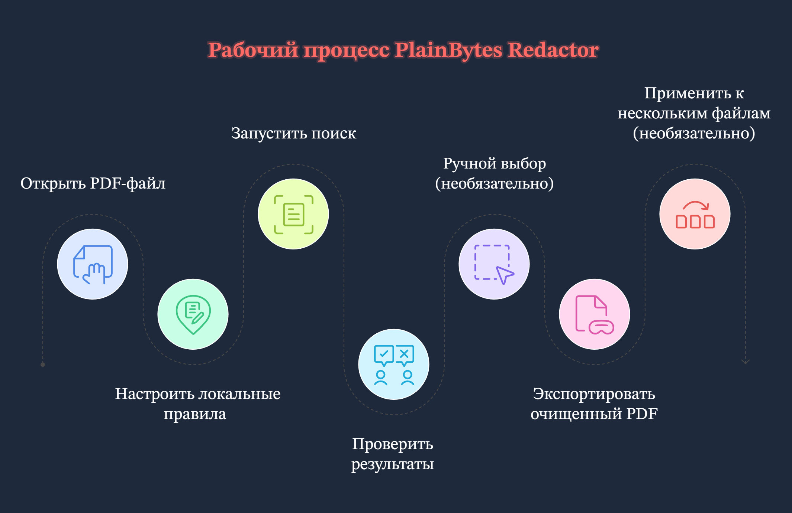
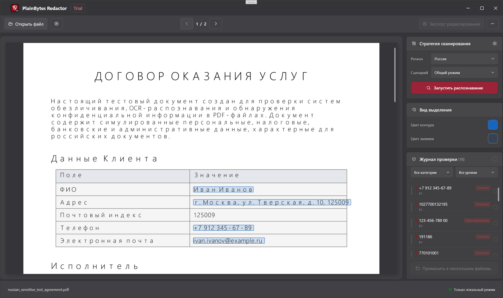

Написано для текущего настольного приложения Windows. Если что-то здесь отличается от установленной у вас сборки, ориентируйтесь на интерфейс приложения.
1. Для чего это приложение
1.1 Настоящее удаление против простого закрашивания
Для комплаенса и безопасности эти два подхода означают совсем разные вещи:
Аспект
Закрашивание поверх (обычная «черная плашка»)
Настоящее удаление (то, к чему стремится приложение)
Внутри PDF
Текст, векторные объекты или изображения могут все еще оставаться в файле, часто просто прикрытые другой графикой.
Найденное содержимое удаляется из потока данных, поэтому его нельзя восстановить обычным разбором PDF.
Копирование / поиск
В зависимости от инструмента «скрытый» текст все еще может копироваться.
Цель в том, чтобы в выделяемом тексте больше не было чувствительных строк (проверьте это в экспортированном файле).
Лучше всего для
Просмотра на экране или быстрого визуального скрытия.
Внешней передачи, архивирования, аудитов, due diligence — любых случаев, где содержимое должно быть удалено окончательно.
PlainBytes Redactor построен вокруг настоящего удаления. Используйте Подтвердить, чтобы явно указать, какие области действительно удаляются при экспорте.
1.2 Что значит «локально и офлайн»
Работа остается на этом ПК: открытие PDF, сопоставление правил, необязательный ИИ на устройстве, запись отредактированного файла и проверка выполняются локально.
Документы не загружаются для редактирования: продукт не предназначен для отправки ваших файлов в облако в рамках процесса удаления данных.
Отдельно от справки и обновлений: при открытии справки, проверки обновлений и похожих пунктов Windows может запустить браузер или Microsoft Store. Это не связано с офлайн-обработкой документов.
1.3 Когда это подходит
Процессы в юридической сфере, финансах, здравоохранении, госсекторе или аудите, где нужен человеческий контроль и меньший риск распространения утечки.
Нужно передать PDF, но убрать ID, номера счетов, контактные данные и другую идентифицирующую информацию.
У вас много PDF с одинаковой разметкой: после подтверждения на одном «шаблонном» файле можно использовать Применить к нескольким файлам, чтобы повторно использовать ту же геометрию для остальных (см. шаг G в §3 и §9).
2. Основные идеи
2.1 Метки редактирования (RedactionMark)
Внутри приложения каждая потенциальная область удаления — это метка редактирования: проще говоря, прямоугольник на странице плюс метаданные.
Страница и прямоугольник: положение и размер в координатах PDF.
Состояние: Ожидает или Подтверждено. При экспорте удаляются только подтвержденные метки.
Источник: правила (шаблоны/regex), ИИ или ручное выделение, чтобы отличать автоматические находки от того, что вы нарисовали сами.
Категория и риск: используются для фильтрации, сортировки и массовых действий в списке аудита.
2.2 Что означает «подтвердить» и почему это делается вручную
Автоматизация не принимает окончательное решение: правила и ИИ могут переотмечать обычный текст или пропускать реальные чувствительные данные, поэтому приложение не считает, что «все найденное надо удалить».
Подтвердить = вы одобряете удаление: после подтверждения метка попадает в набор для экспорта; все, что осталось в ожидании, не считается окончательным решением.
Подходит для реальной проверки: дополнительный шаг хорошо сочетается с проверкой двумя людьми, аудитом и защитой от случайного удаления целой страницы одним кликом.
2.3 Правила и ИИ на устройстве
Аспект
Движок правил
ИИ на устройстве
Основа
Встроенные или пользовательские шаблоны (ключевые слова, regex), зависящие от региона и сценария.
Локальные ONNX-модели для семантического поиска и сущностей; качество зависит от языков и обучающих данных.
Предсказуемость
Когда шаблоны ясные, поведение стабильно и его легко объяснить.
Лучше переносит вариации разметки и формулировок; пограничные случаи стоит перепроверять.
Типичное применение
Строго структурированные поля: ID, телефоны, email.
Более свободный текст: имена, адреса, организации без фиксированного формата.
На практике они часто работают вместе: список аудита показывает все как метки, а вы выбираете, что подтвердить.
2.4 Основа для пакетной обработки
Здесь нет сценария «сохранить как именованный шаблон и выбрать позже». Пакетная обработка использует геометрическую основу в памяти: при переходе через Применить к нескольким файлам приложение превращает каждую подтвержденную метку текущего документа в нормализованный прямоугольник (страница + координаты относительно размера страницы) только для этого пакетного сеанса.
Для каждого PDF в очереди пакетный движок только переносит эти прямоугольники: он не запускает заново полный проход правил или ИИ для каждого файла.
Когда это нормально: несколько экспортов из одной системы с одинаковой разметкой и чувствительными областями в одних и тех же местах (например, типовые выписки). Если разметка съехала, рамки могут попасть не туда — проверяйте первые результаты выборочно.
Правила в центре помогают найти совпадения в текущем процессе для одного файла; они не запускаются автоматически для каждого файла в очереди. Пакетная обработка опирается на уже зафиксированные подтвержденные позиции.
3. Полный рабочий процесс
Сценарий примера
В этом примере юрист готовит к внешней передаче 8-страничный PDF по увольнению сотрудника. Нужно удалить мобильные номера, фрагменты банковских карт и личные email-адреса. Файл является настоящим электронным PDF с выделяемым текстом, а не плоским сканом.

Рабочий процесс вкратце
Шаг A: откройте документ
Загрузите PDF через Открыть или перетаскиванием (обычные форматы изображений тоже поддерживаются; путь в интерфейсе может отличаться).
Все — предпросмотр, обнаружение и метки — привязано к одному исходному файлу, поэтому открывайте именно ту версию, которую собираетесь редактировать.
Шаг B: выберите регион и сценарий в центре правил
Откройте Правила, выберите регион (страна/область), затем бизнес-сценарий (общий, финансовый и т. п.). Включайте или отключайте встроенные правила, при необходимости добавляйте свои.
Набор активных правил меняется в зависимости от региона и сценария; неверный сценарий может отключить полезные правила или добавить лишний шум. Перед закрытием можно сохранить настройки, чтобы следующий похожий документ обработать быстрее.
Шаг C: запустите обнаружение
Справа, в разделе политики сканирования, нажмите Начать обнаружение (или аналогичную кнопку) и дождитесь завершения модели документа и полного прохода.
Совпадения правил и ИИ на устройстве превратятся в список ожидающих меток. Если вы меняете регион, сценарий или правила, запустите обнаружение снова, чтобы список соответствовал настройкам.
Шаг D: проверьте список аудита
В журнале аудита справа просматривайте элементы по одному или используйте фильтры. Подтверждайте то, что нужно удалить; для ложных срабатываний снимайте подтверждение или удаляйте строки (точные элементы управления зависят от сборки). Желтые наложения в предпросмотре обычно синхронизированы; щелчок может переключать состояние подтверждения.
Этот шаг помогает не удалить лишнее и не оставить нужное. Экспорт учитывает только подтвержденные метки.
Шаг E: выделите рамками то, что не было найдено
На предпросмотре слева нарисуйте прямоугольники поверх всего, что правила или ИИ не нашли, но что точно нужно удалить. Если фон сложный, настройте цвета выделения.
Автоматическое обнаружение не находит все; ручные рамки — ваша подстраховка.
Шаг F: экспортируйте
Выберите Экспортировать с удалениями, задайте место сохранения и прочитайте итоговую сводку (сколько элементов удалено, очищены ли метаданные, есть ли сообщения проверки).
Вы получите копию, готовую к передаче. Сводка — это быстрая проверка здравого смысла; если есть предупреждения, откройте экспортированный PDF и проверьте выборочно.
Шаг G (необязательно): примените к нескольким файлам
Когда в этом PDF все нужное подтверждено, используйте Применить к нескольким файлам (или аналогичный пункт). Приложение построит описанную выше нормализованную основу и откроет пакетное редактирование. Добавьте другие PDF с совпадающей разметкой, укажите папку вывода, выберите, нужно ли удалять метаданные, и запустите обработку.
Если разметка действительно совпадает, вам не придется повторять одни и те же подтверждения для каждого файла; пакетная обработка все равно физически удаляет области внутри рамок. Важно: это не переиспользуемый именованный шаблон на диске — отдельного файла шаблона нет; основа берется из этого подтвержденного документа. Пакетная обработка также не запускает правила/ИИ повторно для файлов в очереди. Если разметка файла изменилась, вернитесь к процессу для одного файла.
4. Обзор главного окна

Главное окно
4.1 Предпросмотр (слева)
Зачем нужно: показывает каждую страницу PDF (или изображения), чтобы номера страниц и разметка соответствовали файлу.
Метки: автоматические и ручные ожидающие области подсвечиваются; щелчок по области часто переключает подтверждение вместе со списком (желтая индикация зависит от сборки).
Ручные рамки: щелкните и перетащите в предпросмотре, чтобы добавить прямоугольную метку.
4.2 Панель политики сканирования
Зачем нужно: точка запуска обнаружения (например, Начать обнаружение), связанная с регионом, сценарием и наборами правил из центра правил.
Почему отдельно: отделяет «когда сканировать весь документ» от «как работать со списком аудита», что снижает путаницу.
4.3 Вид выделений
Зачем нужно: настроить вид ручных выделений — рамку, заливку, пользовательские цвета, чтобы рамки были видны на сложном фоне.
Важно: это только визуальная помощь; фактическое удаление все равно зависит от подтверждения и экспорта.
4.4 Список аудита
Зачем нужно: собранные чувствительные находки для открытого документа, фильтры по категории и риску, а также подтверждение/снятие по строкам или массово.
Синхронизация с предпросмотром: выбор или действие со строкой обычно прокручивает/подсвечивает страницу; щелчок по метке в предпросмотре обновляет состояние списка.
4.5 Панель инструментов (сверху вниз)
Открыть: выбрать локальный PDF или поддерживаемое изображение.
Закрыть документ: закрывает текущий файл.
Предыдущая / следующая страница: используйте панель инструментов; Page Up / Page Down на странице одного файла отдельно обрабатываются для прокрутки предпросмотра (см. §7.3).
Правила: открывает центр правил.
Пакет: открывает пакетное редактирование.
Экспортировать с удалениями: доступно, когда есть подтвержденные метки.
Еще (⋯): язык, справка, отзыв, обновления, сведения и т. п.
Строка состояния показывает готовность, имя текущего файла, готовность среды ИИ на устройстве и другие подсказки.
5. Центр правил
5.1 Регион и бизнес-сценарий
Регион: страна/область; определяет, какие встроенные шаблоны применяются (форматы ID, правила телефонов и т. п.).
Бизнес-сценарий: сужает или усиливает наборы правил (общие, финансовые, медицинские, юридические/государственные), чтобы настройки лучше подходили типу документа.
Вместе: сначала задайте регион, затем сценарий; после изменений запустите обнаружение снова, иначе вы можете смотреть на старые результаты.
5.2 Встроенные и пользовательские правила
Встроенные: поставляются с приложением, сгруппированы (личность, финансы, адрес, контакт и т. д.), включаются по отдельности, основаны на локальных данных и полностью офлайн.
Пользовательские: ваша метка плюс шаблон — простая подстрока (без учета регистра) или регулярное выражение .NET. Полезно для внутренних кодов, которых нет во встроенных правилах. Может быть ограничение на количество.
5.3 Когда настраивать правила
Слишком много шума: временно отключите слишком широкие правила или выберите более подходящий сценарий.
Один и тот же шаблон повторяется, а встроенные правила не подходят: добавьте пользовательское правило, чтобы меньше выделять вручную.
Настройки разъехались: Восстановить по умолчанию очищает локальные переопределения (потребуется подтверждение).
6. Боковая панель аудита
6.1 Почему подтверждение устроено так
Строка часто объединяет несколько вхождений одного чувствительного типа или ключа на разных страницах; подтверждение означает, что все эти места нужно удалить.
Ожидает отделяет «предположение модели» от «решения человека», поэтому ничего не записывается массово без проверки.
Экспортный движок намеренно использует только подтвержденные метки.
6.2 Фильтры и массовое подтверждение
Фильтр: сузьте по категории или риску, чтобы сначала разобрать высокорисковые элементы или один тип поля (например, только контакты).
Массово: переключает подтверждение для всего, что видно под текущим фильтром (формулировка зависит от сборки). Удобно, когда вся группа явно верная или явно неверная.
Совет: перед массовым действием посмотрите на активный фильтр, чтобы не затронуть лишние строки.
6.3 Уровни риска
Уровни (например, critical, high, suspicious, medium, low) помогают сортировать и фильтровать, чтобы самые рискованные находки были сверху. Это не приказ подтверждать — вы по-прежнему решаете, что удалять.
7. Ручные выделения
7.1 Когда стоит рисовать рамки вручную
Правила и ИИ что-то пропустили, а вы знаете, что это нужно удалить: рукописные пометки на фото, нестандартные участки разметки и т. п.
Находки раздроблены или смещены: удалите плохие автоматические строки и нарисуйте более точную рамку.
Контент только из скана обрабатывается как изображение: поведение отличается от текстовых PDF, и часто придется опираться на ручные рамки (см. FAQ).
7.2 Работа с автоматически найденными метками
Практичный порядок: запустить обнаружение → в списке аудита убрать явные ложные срабатывания и заметить закономерности → добавить несколько ручных рамок для реальных пропусков → бегло пройти предпросмотр постранично. Ручные и автоматические метки при экспорте обрабатываются одинаково; важно только, подтверждены ли они.
7.3 Горячие клавиши (предпросмотр и метки)
Пока загружена страница одного файла, она подключается к PreviewKeyDown главного окна. Горячие клавиши ниже работают только при открытом документе и когда приложение не занято. Они не связаны напрямую с кнопками предыдущей/следующей страницы на панели инструментов.
Клавиша
Действие
Tab
Следующая метка редактирования.
Shift + Tab
Предыдущая метка редактирования.
←↑→↓
Без модификаторов: ←↑ — предыдущая метка, →↓ — следующая. С любым зажатым модификатором только ↑↓ сдвигают прокрутку предпросмотра на фиксированный шаг; ←→ в этой ветке не обрабатываются.
Enter
Без модификаторов: переключить подтверждение выбранной метки.
Delete
Без модификаторов: удалить выбранную метку.
Page Up / Page Down
Прокрутить предпросмотр примерно на высоту одного окна просмотра.
Home / End
Перейти в начало / конец предпросмотра.
8. Экспорт
8.1 Проверка перед экспортом
Проверено, что это именно файл, который вы собираетесь передать (число страниц, вложения).
Все, что должно быть удалено, подтверждено; все, что должно остаться, очищено или удалено из списка.
Вы визуально проверили ключевые страницы в предпросмотре, включая сканы и необычные участки, которые выделяли вручную.
Вы понимаете, что экспорт записывает новый файл (или выбранный путь) и обычно не перезаписывает оригинал; поведение зависит от диалога сохранения.
8.2 Зачем удалять метаданные
Помимо содержимого страниц PDF содержит автора, производителя, временные метки, XMP и другое. Если удалить текст на страницах, но оставить метаданные, можно все равно раскрыть внутренние учетные записи или историю редактирования. Приложение может очищать это при экспорте (и опционально в пакетном режиме). Для файлов, уходящих за пределы организации, обычно лучше оставлять очистку метаданных включенной, если интерфейс это предлагает.
8.3 Как читать сводку
Похоже ли количество физически удаленных элементов на то, что вы видели?
Указано ли, что метаданные очищены?
Если вы видите предупреждения проверки текста, автоматическая выборка нашла что-то странное. Откройте экспортированный PDF и проверьте; не считайте одну только сводку доказательством полного отсутствия следов.
9. Пакетная обработка
9.1 Что на самом деле делает пакетный режим
После входа через Применить к нескольким файлам с основой каждый PDF в очереди проходит путь только переноса рамок: нормализованные прямоугольники сопоставляются с абсолютными координатами на каждой странице, создаются метки, содержимое физически удаляется, а метаданные при необходимости очищаются. Правила или ИИ не запускаются заново для каждого файла.
То есть правила и ИИ в режиме одного файла помогли найти и подтвердить на образце; пакетная обработка просто копирует места, которые вы подтвердили, на другие файлы с той же геометрией.
9.2 Подходящие случаи
Много PDF из одной системы с одинаковой разметкой и чувствительными областями в одинаковых относительных позициях.
Вы уже завершили обнаружение и подтверждение на одном образце и хотите не повторять это для почти одинаковых копий.
9.3 На что обратить внимание
Сохраненного файла шаблона нет: при закрытии окна пакетной обработки основа в памяти сбрасывается; в следующий раз создайте ее снова через Применить к нескольким файлам.
Если открыть Пакет с панели инструментов без этого пути, основы может не быть, и Старт может остаться недоступным.
Даже небольшие сдвиги разметки могут привести к пропускам или неверным областям; выборочно проверяйте первые результаты.
Для внешней передачи включайте очистку свойств и скрытых данных, если такая опция доступна.
Некоторые типы документов или уровни лицензии могут ограничивать пакетную обработку; если Применить к нескольким файлам неактивно, это и есть сигнал.
10. Частые вопросы
10.1 Почему так много ложных срабатываний?
И правила, и ИИ опираются на эвристики: строки, которые похожи на чувствительные данные, совпадения названий мест с именами людей, фрагменты таблиц и т. п. Обычно помогает настроить сценарий/правила, отключить шумное правило или снять подтверждение в списке. Ручное подтверждение сделано намеренно: оно снижает риск удалить одним кликом то, что вам еще нужно.
10.2 Что со сканированными PDF?
Если PDF фактически является изображением страницы без настоящего текстового слоя, у правил и ИИ меньше данных для работы. Тогда чаще придется использовать ручные рамки или специальный поток для растровых файлов, если он есть в сборке (следуйте подсказкам на экране). Полезно заранее понимать, перед вами цифровой PDF или скан.
10.3 Можно ли редактировать изображения? Почему текст на фото не распознается?
Да. Обычные форматы изображений можно открыть как документ: вы все так же просматриваете, ставите метки и экспортируете. Чтобы размер установщика и стоимость выполнения оставались разумными, в этой версии нет встроенного OCR: текст на фотографиях не становится выделяемым, поэтому поиск текста правилами и ИИ почти не применяется. Удаляйте чувствительные области, рисуя рамки (и используя горячие клавиши для перехода между метками). Если нужно «распознать, затем сопоставить», сначала выполните OCR другим инструментом или предоставьте PDF с текстовым слоем.
10.4 Как быстро проверить экспорт?
В любом PDF-ридере попробуйте выделить все / скопировать и выполнить поиск по строкам, которые точно были чувствительными.
Визуально проверьте колонтитулы и сноски.
Прочитайте сводку проверки экспорта в приложении; если есть предупреждения, сначала вернитесь к этим страницам.
Для особо важных случаев добавьте обычные проверки вашей организации: второй инструмент, проверку распечатки и т. п.